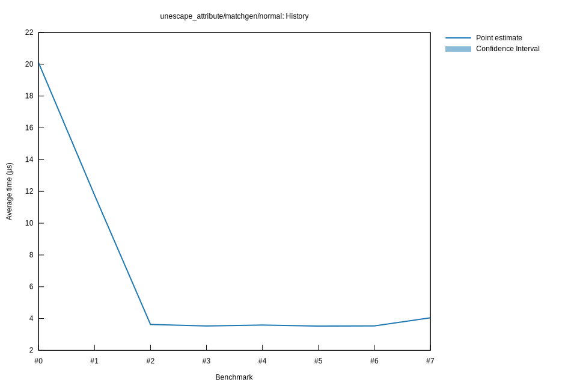

# 32025-10-29T22:22:23-07:00
|
Lower Bound |
Estimate |
Upper Bound |
| Value: |
3.52µs |
3.53µs |
3.55µs |
| Throughput: |
4581.29MiB/s |
4559.45MiB/s |
4535.63MiB/s |
| Change in Value: |
-3.5552% |
-2.8380% |
-2.0879% |
| Change in Throughput: |
+3.6862% |
+2.9209% |
+2.1325% |
No change in performance detected.
# 22025-10-29T19:46:46-07:00
|
Lower Bound |
Estimate |
Upper Bound |
| Value: |
3.62µs |
3.63µs |
3.64µs |
| Throughput: |
4453.28MiB/s |
4439.61MiB/s |
4425.47MiB/s |
| Change in Value: |
-69.113% |
-68.822% |
-68.558% |
| Change in Throughput: |
+223.76% |
+220.74% |
+218.05% |
No change in performance detected.
# 12025-10-29T19:03:33-07:00
|
Lower Bound |
Estimate |
Upper Bound |
| Value: |
11.71µs |
11.77µs |
11.83µs |
| Throughput: |
1375.70MiB/s |
1368.82MiB/s |
1361.59MiB/s |
| Change in Value: |
-42.427% |
-41.781% |
-41.231% |
| Change in Throughput: |
+73.694% |
+71.764% |
+70.156% |
No change in performance detected.
# 02025-10-26T16:47:49-07:00
|
Lower Bound |
Estimate |
Upper Bound |
| Value: |
20.04µs |
20.10µs |
20.16µs |
| Throughput: |
804.10MiB/s |
801.67MiB/s |
799.09MiB/s |